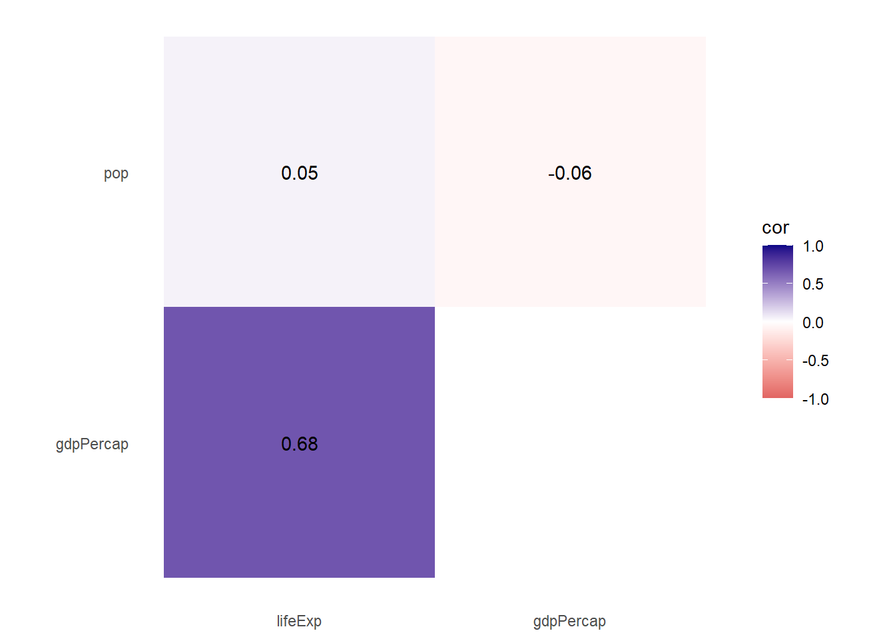

correlation_matrix <- gapminder %>%
filter(year == 2007) %>%
dplyr::select(lifeExp, gdpPercap, pop) %>%
cor()
correlation_matrix[lower.tri(correlation_matrix)] <- NA
correlation_matrix_long <- correlation_matrix %>%
# Convert from a matrix to a data frame
as.data.frame() %>%
# Matrixes have column names that don't get converted to columns when using
# as.data.frame(), so this adds those names as a column
rownames_to_column("measure2") %>%
# Make this long. Take all the columns except measure2 and put their names in
# a column named measure1 and their values in a column named cor
pivot_longer(cols = -measure2,
names_to = "measure1",
values_to = "cor") %>%
# Make a new column with the rounded version of the correlation value
mutate(rounded_cor = round(cor, 2)) %>%
# Remove rows where the two measures are the same
filter(measure2 != measure1) %>%
# Get rid of the empty triangle
filter(!is.na(cor)) %>%
# Put these categories in order
mutate(measure1 = fct_inorder(measure1),
measure2 = fct_inorder(measure2))
ggplot(correlation_matrix_long,
aes(x = measure2, y = measure1, fill = cor)) +
geom_tile() +
geom_text(aes(label = rounded_cor)) +
scale_fill_gradient2(low = "#E16462", mid = "white", high = "#0D0887",
limits = c(-1, 1)) +
labs(x = NULL, y = NULL) +
coord_equal() +
theme_minimal() +
theme(panel.grid = element_blank())